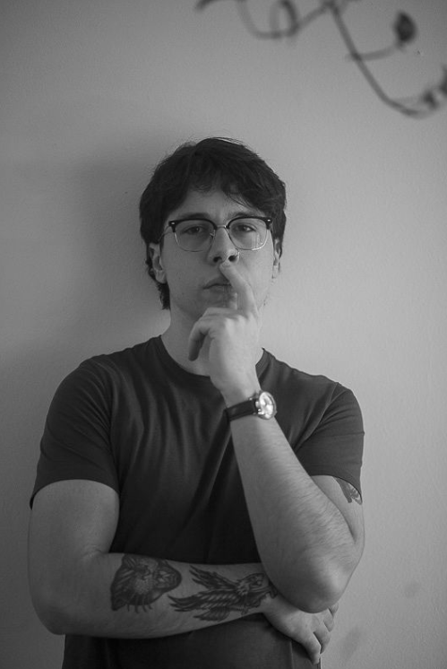

uma pequena antologia
Poemas de Samuel Bozio
Role a página para baixo.
Os poemas vêm um depois do outro.
Herdei de meu pai
uma degeneração
genética da retina.
Desde pequeno,
desde um ser fofo
desalmado e gorducho
como se tivesse sido
naturalmente implantado
o devido valor à imagem.
Eu enxergava o mundo
do mais belo pássaro morto
até o rubro entardecer infernal,
e à mim era admirável.
Então fui crescendo e
sem que me avisasse
no fundo eu ainda
me entregava ao que via,
e bastava-me apenas
olhar.
A palma erguida de minha mãe
num movimento rápido,
preciso e triste
que meus olhos
mal conseguiam acompanhar.
Eu admirava.
Ao atravessar meu rosto,
marcava-o com um
vermelho intenso,
latejante e quente,
que frente ao espelho
eu amei pela primeira vez
a cor do sangue.
Uma paixão terna e sádica.
Assim que completei dezesseis anos,
foi-me avisado de meu fardo
e minha visão turvou-se
numa película cristalina
de dor.
A dor que só os fadados à
ausência sentem.
Me declarei para minha vizinha
e insisti para que entendesse
o fruto de minha paixão.
Uma semana mais tarde,
eu a despi
e não cedi um sequer segundo
ao breu de entregar-se ao prazer.
Fitei cada detalhe:
Suas sobrancelhas franzidas,
seus cílios, sua boca entreaberta,
seus dentes perfeitos;
assim fiz, como um maníaco
imerso em sua timidez.
E ao fim do ato, nos lençóis eu o vi:
O rompimento.
A luxúria precavida de ingenuidade
entre suas perninhas bambas
como duas torres
que choram sangue.
Vermelho
pela última vez.
E anti a maré eu velejava
em remadas penosas
com o sol confuso em
qual hemisfério se punharia.
Impelido à um repouso aflito
encarei a água e pude ver
como num espelho do tempo
meu rosto livre das marcas
e meus olhos brilhosos com o ardor
jubiloso da jovialidade.
Em meu penteado lustrado
que com a mão toquei a atual
coroa calva, memorei picos
orgulhosos de vaidade zodíaca.
Me estirei de sobressalto em
apoio contra a madeira de
minha canoa visceral,
seguro de que de meu peito
meu coração não se desprenderia
E no ímpeto mordaz, se lançasse
para se afogar em minhas
cálidas bochechas coradas
ante ao toque dos teus dedinhos.
Embevecido, atraído pela mesma
vontade de me debruçar novamente
e umedecer o nariz a fim de que mais
próximo eu estivesse destas visões
tão vívidas, tão ímpares.
Ao mergulhar as narinas e meu par
de olhos contíguos ao plano aquoso,
comicharem. Lancei ao mundo meu
brado bárbaro ao perceber que
os olhos que me miravam assíduos
não eram o reflexo dos meus próprios.
E como se toda saudade entrasse
em cárcere, aqueles olhos eram-me
íntimos. Os castanhos ébrios
de meu progenitor
de quem herdei a poesia bestial.
Minha canoa num sopro fluvial
deslizou à sombra da tormenta celeste
em direção aonde o sol do hoje morria.
Perante os impactos entre colunas salgadas,
meu olhar desvaído à musa
que aos poucos se erguia.
Trouxe á tona meu Eu genuíno
com um rosto inexpressivo
em meio aos cambaleios.
E levou consigo num calafrio glacial
todo demérito adquirido até alí.
Apaziguou meu pavor e me
envolveu como uma serpente
melancólica, de névoa hermética.
Imerso no abismo indolente
até meu coração cessar a pulsão.
No silêncio
eu era uma bailarina submersa
numa profunda piscina
de um ginásio vazio
com uma nuvem de medo
do abandono
de morrer afogado
por perder as forças
por não resistir a tentação
e ninguém me descobrir
até o próximo nadador
No silêncio eu era
um prato do almoço
esquecido até a janta.
Uma refeição inútil
que algum fantasma apenas
observou atentamente
as moscas pousarem
e o macarrão
perder sua aparência
e sabor.
No silêncio eu era a confusão
dos ingênuos
diante uma piada maldosa
em sua própria impotência.
Eu era o grito inaudível
a súplica
enquanto o trem se afasta
levando meu único amor
que acolheu minha fúria
como mágica.
O rugido
na tentativa de exorcizar
o diabo de cada dia
que me causa dor no estômago
no coração e nos ossos das costelas
que congestiona minhas narinas
e é o ar que resseca meus lábios
e o amarelo do meu sorriso,
que consome meu liquor.
E uma mosca voa
E um vampiro ri e perde o fôlego
e eu novamente sou o silêncio
pela janela do quarto
o temporal
e minha Ira
se reerguendo em uma trovoado
no brado celestial.
Na ameaça fulgente dos teu olhos
perdido no vazio inconstante do infinito
na via ébria e asfaltada
do mais selvagem subúrbio
Eu conheci os anjinhos fofoqueiros
cacoetes do cão
anjinhos de joelhos ralados
anjinhos poetas de asas indomáveis
perdidos no masoquismo lírico
onde vertiam delírios
Gargalhantes delírios
ao lado do poste
à sombra do paraíso
escondido
Cessou-se a folia
minha e dos meus
amiguinhos
envergonharam-se
ao ver subindo
Lucifer, sorrindo.
O fim do carnaval
e a mera
prosa em ruína.
tu surge à mim como um raio
à mim, ignóbil chão que acolhe
teu clarão que devasta toda poeira dos olhos
e os automóveis da racionalidade
como um raio
o jeito que deus encontrou de dizer
acordem
a logística da mensagem divina
um raio
perante a indiferença com o caos

Tive o privilégio ao acesso à cultura e literatura muito cedo, assim como a ascensão do meu interesse por diversas formas de expressão. Ao partir em busca de como eu poderia me traduzir para o mundo ao meu redor, fui da música a vídeos caseiros, para enfim me encontrar na escrita. Abraçado a forças pela vida adulta e trabalho, estes poemas foram os que sobreviveram à minha época de escritor. São registros meus que olho com bons sentimentos, satisfeito.
Eu me chamo Samuel Bozio, nascido em São Leopoldo, RS — a única cidade na qual eu poderia ter nascido — em agosto de 2003, sob o signo de Leão.